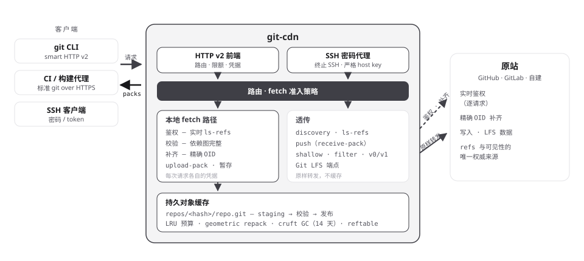

Objects cached. Authorization live.
git-cdn 在自己的域名上提供 git smart HTTP v2——以及可选的 SSH 密码代理——背后是共享对象缓存。每次本地服务的 fetch 仍然用调用者 自己的凭据在原站实时鉴权；热缓存和冷缓存的校验完全一致。客户端 保持原生 git，变的只有 URL。
四个观察决定了它的设计。
CI 集群、构建代理和开发者机器反复从同一个原站拉取同一批仓库。 中间加一层缓存后，这些字节只需经过原站一次，而不是每个客户端 各一次。
复制对象的镜像也复制了访问控制的问题。git-cdn 对每个本地服务
的 fetch 都向原站做一次实时 ls-refs；缓存中的对象
永远不构成读取授权。
不需要插件，不需要代理变量。把克隆 URL 指向 CDN，或用
url.insteadOf 改写；凭据提供给 CDN 域名，由 CDN
转发给原站。
Git 自己做协商、对象接收和 pack 生成；Go 负责路由、缓存发布 和资源限制——这个分工及其权衡写在 设计文档里。
discovery 和客户端 ls-refs 始终发往原站。
want 为当前广播 OID 的 v2 fetch 可以在本地服务，分四步：
用本次请求的凭据做一次新鲜的 ls-refs。原站
401/403/404 及其 challenge 原样透传；登录页不能授权缓存数据。
依赖遍历证明 wanted roots 是完整的。commit 存在而 blob 缺失 仍然算 miss——检查的是对象图，不是 refs。
缺失的 roots 按精确 OID 拉入 staging，校验后连同 GC pins 一起 发布。已验证的旧 roots 通过 alternates 参与增量协商。
请求专属的 refs 视图驱动本地 upload-pack。响应先落入有上限的 暂存文件，Git 成功退出后才传输——任何失败都回退为一次完整的 原站响应。
| 请求 | 行为 |
|---|---|
| discovery · ls-refs | 实时代理原站，保留协议能力和 refs |
| v2 fetch，want 是新鲜的 tip / tag / peeled OID | 本地服务——上面的四步 |
| have 协商 | have 必须是已授权 roots 的祖先 commit；否则回源 |
| shallow · filter · want-ref · 未知扩展 · SHA-256 · v0/v1 | 完整回源 |
| push（receive-pack）· Git LFS 端点 | 完整回源，不缓存 |
这些行为由 19 个文件中的 101 个测试函数钉死，CI 带 race 检测运行，
用标准 Git 客户端驱动带认证的 git http-backend——
docs/testing.md。
按原站 URL、仓库路径和对象格式共享，存放于
repos/<hash>/repo.git。不同用户和轮换后的
token 复用同一份对象；每次 fetch 仍用自己的凭据鉴权和补齐，
凭据只在请求内存中存活。
仓库间默认 20 GiB 的 LRU 预算。访问时间跨重启保留；活动 租约和排队请求保护其仓库；已淘汰的仓库可再次按需获取。
空闲仓库做 geometric repack，cruft GC 的保留窗口最短 14 天。 失败保留原 pack；容量不足跳过维护，不影响客户端响应。
新建缓存、补齐 staging 和请求专属视图都用 reftable（Git 2.45+）。已有 files 格式缓存继续可用；迁移是一行文档化的命令。
缺失的 blob 和 pack 由图遍历发现，按精确 OID 补齐。对象进入 staging、校验通过后发布——普通失败绝不删除整个缓存。
一个上游用直接仓库路径，或用 /site/… 前缀在多个
主机间选择。默认要求每站点独立凭据域名；Host 不匹配的带凭据请求
直接 421，不回源。
可选前端终止 SSH，把相同的密码或 token 提交给原站。默认严格
host key 校验，可选 accept-new 首次登记；只带公钥的
客户端被拒绝并收到说明 banner。
Git LFS 鉴权和传输命令以受限的 download/upload 透传。保留原始 endpoint 和对象签名 URL——LFS 数据留在原站的存储上。
/healthz 与 /metrics：本地、补齐、
透传、鉴权拒绝计数，缓存字节数、淘汰、活动请求数。日志不含凭据
和原站 Git stderr。
docker compose up -d --build --wait
# 默认多站点（github + gitlab），仅绑定回环地址：
git clone http://127.0.0.1:8080/github/git/git.git
# 第一次 clone 补齐缓存，第二次在本地服务；
# 每个 fetch 响应都带：
X-GitCDN-Cache-Status: MISS # 之后是 HIT# 全局改写 origin URL——原生 git，无需插件：
git config --global \
url."https://git-cdn.example/".insteadOf "https://gitlab.com/"
# 凭据提供给 CDN 域名，
# 每次 fetch 由 CDN 转发给原站go build -o bin/git-cdn ./cmd/git-cdn
cp config.example.yaml ~/.git-cdn/config.yaml
./bin/git-cdn # 监听 127.0.0.1:8080
# 需要 Go 1.26+ 和 Git 2.45+（reftable、
# protocol v2、cruft pack）；Linux 或 macOS可缓存的 v2 fetch 走"鉴权 / 校验 / 补齐 / 服务"流水 线，背后是持久对象库；其余请求——discovery、push、shallow 与 filter、LFS——原样转发给原站。
